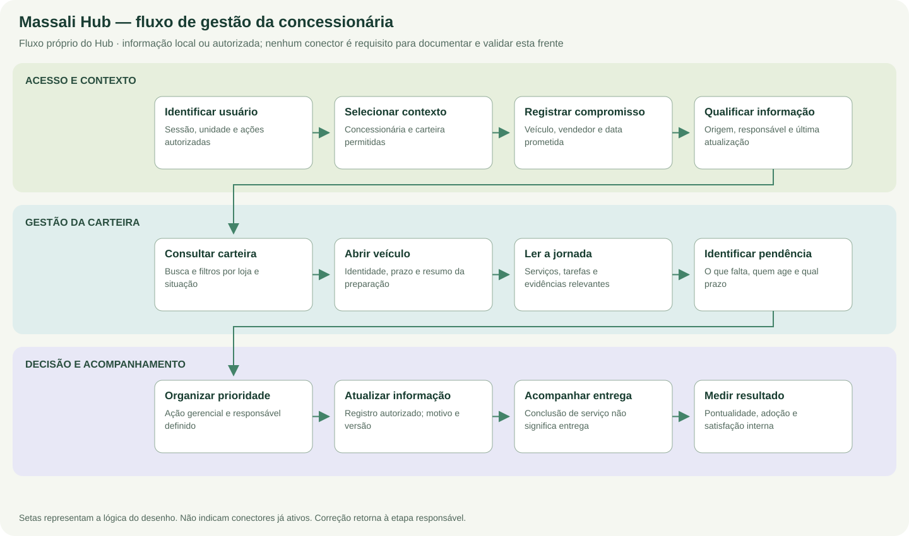

Documentação de projeto
Massali Hub
Gestão da concessionária, carteira de veículos e compromissos de entrega.


Documentação do projeto
Processo
Operação
Etapas, responsabilidades e exceções.
Explorar projeto →NegócioRegras
Critérios e decisões deste projeto.
Explorar projeto →EngenhariaCódigo
Arquitetura e componentes.
Explorar projeto →ContratosDados e API
Modelos e endpoints.
Explorar projeto →ConferênciaValidação
Cenários de verificação.
Explorar projeto →ConsultaDocumentos
Especificações e contratos.
Explorar projeto →